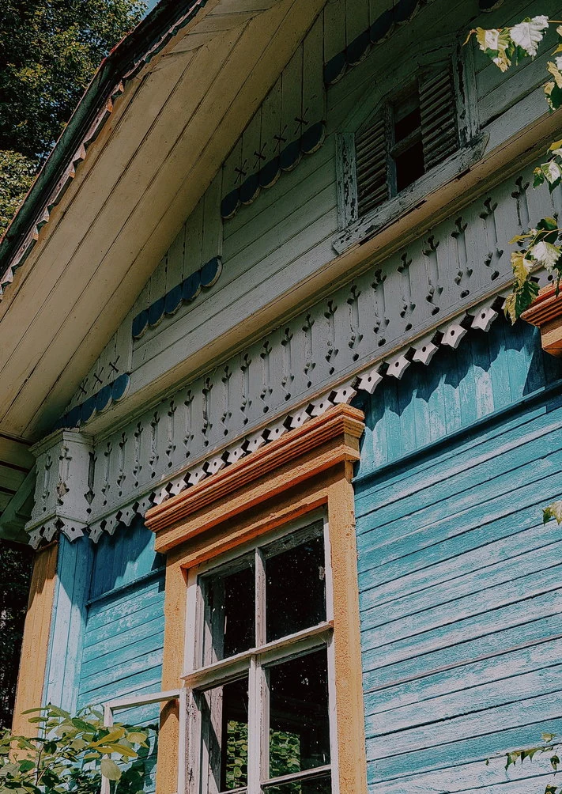
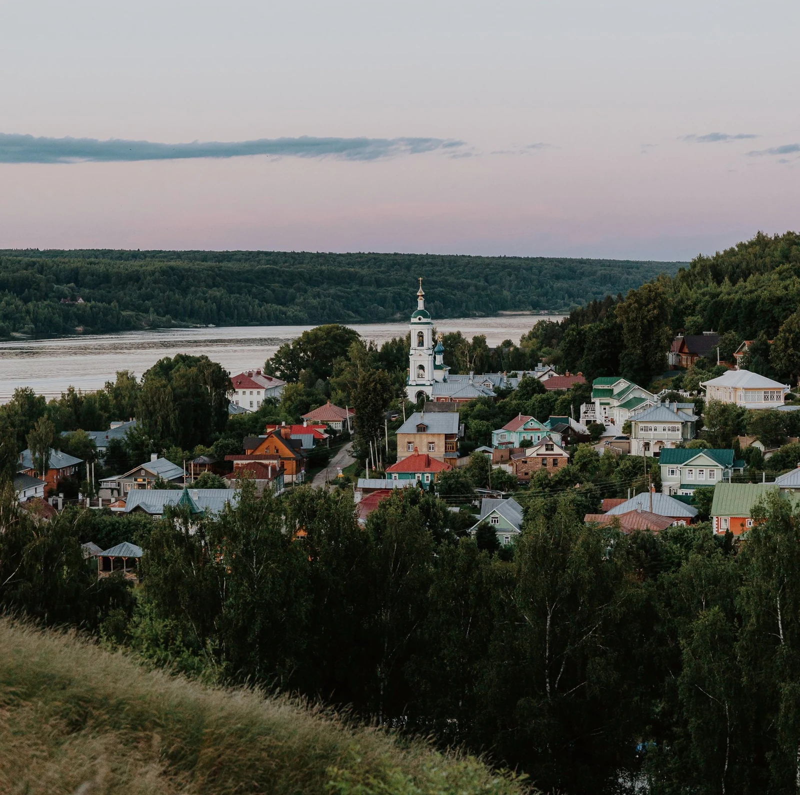
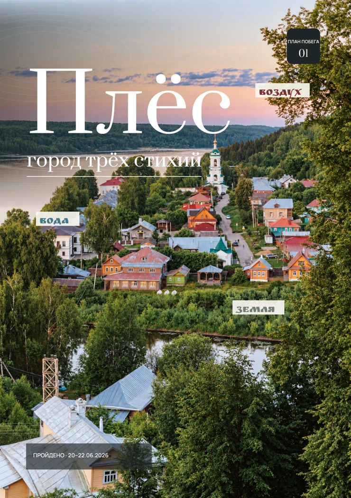

Выпуск № 01 Уже в дорогу
Плёс
Город трёх стихий
Сохраните PDF перед поездкой — текст и карта будут под рукой без интернета.
Подняться на холм утром, спуститься к Волге, разглядывать наличники. В Плёсе не нужно спешить. Ему нужно дать время.
- Маршруты прогулок и карта
- Любимые места и заметки из поездки
- Фотографии и видео по QR-кодам
Ивановская область01 / Плёс



Земля · Вода · ВоздухБерите с собой ↗︎